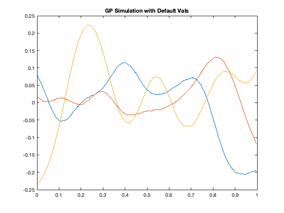
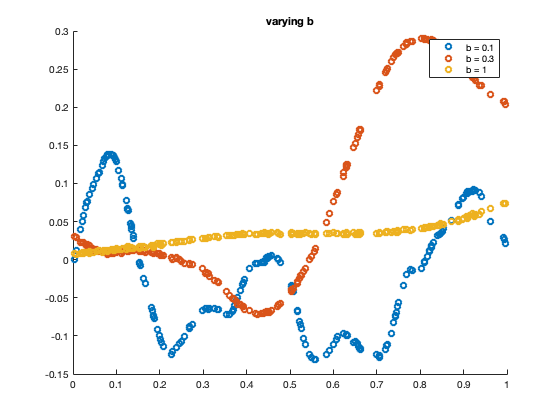
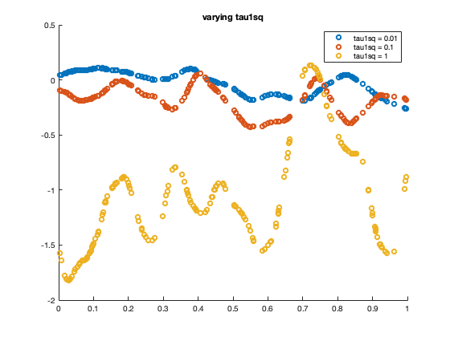
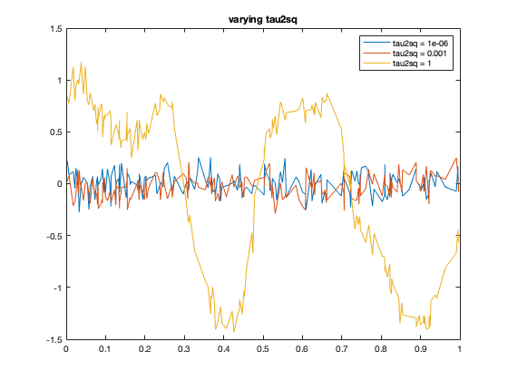

SIMULATE A GAUSSIAN PROCESS
This code is intended to simulate a Gaussian Process and test sweeping over the hyperparameters
%Initialize Params clear; reps = 3; numofpoints = 200; data = rand(1,numofpoints); data = sort(data); tau1sq = 0.01; tau2sq = 1e-6; b = 0.1; tau1sq_sweep = [0.01, 0.1, 1]; tau2sq_sweep = [1e-6, 1e-3, 1]; b_sweep = [0.1, 0.3, 1]; %%Simulation Phase % Simulate GP 3 times with default hyperparams for i = 1:reps res = GaussProc(data, b, tau1sq, tau2sq, @CovSqExp); plot(data, res); hold on; end title('GP Simulation with Default Vals'); %Simulation for varying b figure(1); for i = 1:length(b_sweep) res = GaussProc(data, b_sweep(i), tau1sq, tau2sq, @CovMat52); scatter(data, res); legendinfo{i} = ['b = ' num2str(b_sweep(i))]; hold on; end title('varying b'); legend(legendinfo); %Simulation for varying tau1sq figure(2); for i = 1:length(tau1sq_sweep) res = GaussProc(data, b, tau1sq_sweep(i), tau2sq, @CovMat52); scatter(data, res); hold on; legendinfo{i} = ['tau1sq = ' num2str(tau1sq_sweep(i))]; end title('varying tau1sq') legend(legendinfo); %Simulation for varying tau2sq figure(3); for i = 1:length(tau2sq_sweep) res = GaussProc(data, b, tau2sq_sweep(i), tau1sq, @CovMat52); plot(data, res); hold on; legendinfo{i} = ['tau2sq = ' num2str(tau2sq_sweep(i))]; end title('varying tau2sq') legend(legendinfo);
Used Functions
function res = GaussProc(inputData, b, Tau1sq, Tau2sq, covFunc) n = size(inputData, 2); meanFx = zeros(1,n); covFx = zeros(n); for i = 1:n for j = 1:n covFx(i,j) = covFunc(inputData(:,i), inputData(:,j), b, Tau1sq, Tau2sq); end end res = mvnrnd(meanFx,covFx); end function res = CovSqExp(x1, x2, b, tau1sq, tau2sq) dist = norm(x1 - x2); kronecker = isequal(x1, x2); res = tau1sq * exp( -0.5 * (dist/b)^2 ) + tau2sq *kronecker; end function res = CovMat52(x1, x2, b, tau1sq, tau2sq) dist = norm(x1 - x2); kronecker = isequal(x1, x2); expterm = exp(-sqrt(5)*dist/b); taylorterm = 1 + sqrt(5)*dist/b + 5 * dist^2/(3*b^2); res = tau1sq*taylorterm*expterm + tau2sq*kronecker; end   